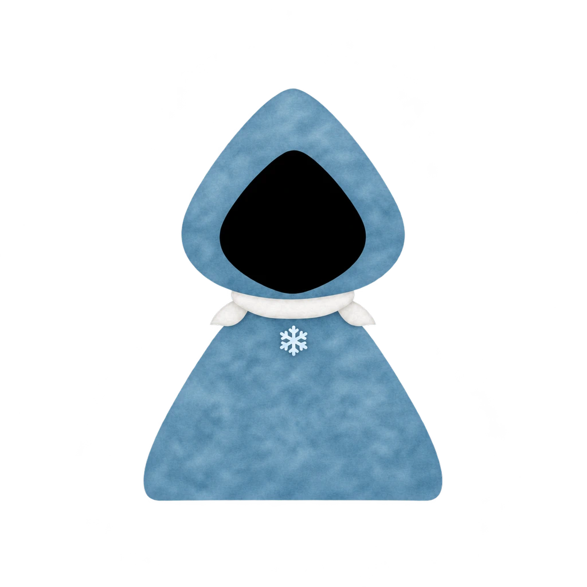

性格まっ逆なのに
なぜか気になる人
いる？
🔥♡❄
それ、相性で説明できるかも
あなたと あの人、
こんなに真逆
あなた

夏の沿岸
港に火を灯す人
あの人

冬の沿岸
帰る場所を守る人
VS
相性を占ってみたら…
「火と氷が引き合う二人」
♡ 恋愛の相性 ♡
0 / 100
とても良い ★★★★★
反対だから惹かれる、
強い引力の恋。
強い引力の恋。
しかも、二人へのアドバイスまで
あの人が黙ってる時間は、
嫌いのサインじゃない
嫌いのサインじゃない
生年月日と名前だけで
恋愛・結婚・友情まで点数で出る
恋愛・結婚・友情まで点数で出る
気になるあの人との相性、
こっそり見てみて
潮環占い
App Storeで検索
無料でダウンロード